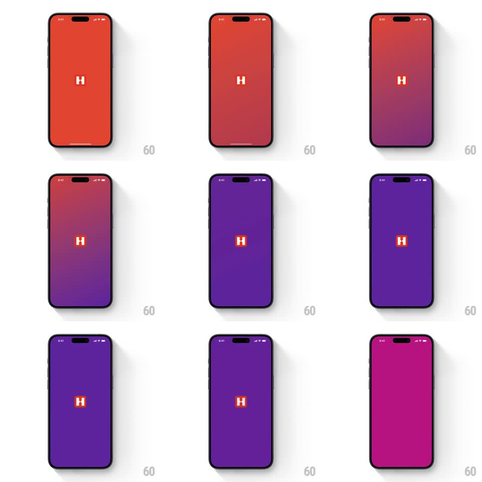

Media
Frame-by-frame

Rebuild this animation 1:1: Hostelworld's launch splash - the H logo holds center while the background sweeps through a smooth red-to-purple gradient journey, then the logo fades out into the app.

Rebuild this animation 1:1: Hostelworld's launch splash - the H logo holds center while the background sweeps through a smooth red-to-purple gradient journey, then the logo fades out into the app. ## Integration Integration: stack-agnostic spec - springs given as stiffness/damping, timed motions as duration + curve; map every value to your framework and animation library of choice. ## Scene Hostelworld splash: a full-screen gradient and the white "H" mark (in its square) dead center. The gradient travels: warm red-orange at start, deepening through red-purple into a rich violet, then settling toward the brand magenta-purple. ## Motion spec Pattern: multi-stage gradient sweep with a logo fade-out. - Launch on warm red-orange (flat, logo at 100%). - The gradient begins moving top-down: a purple wave rises from the bottom edge, blending through red-purple mid-tones (2.2s, ease-in-out) - the sweep is a moving gradient, not a crossfade of static images, so mid-states show both colors live. - The sweep completes at deep violet, holds 400ms, then the hue drifts toward magenta-purple (800ms). - The H mark stays perfectly centered and static through the whole color journey (a barely-there scale breath 1 -> 1.02 over 2s is allowed). - Finale: the logo fades out (400ms) and the settled gradient hands off to the first app screen, which fades in over the same purple (300ms) - the splash color becomes the app's entry state. ## Calibration - The transition must pass visibly through the mid purple-red - no skipping from red to violet. - Total splash duration ~3.5-4s; never longer. ## Reduced motion Static brand-purple splash; logo crossfades to the first screen (300ms). ## Don't miss - The H never moves, scales dramatically, or spins - all the life is in the background. - The final purple must match the onboarding gradient's top color exactly - the handoff is seamless.